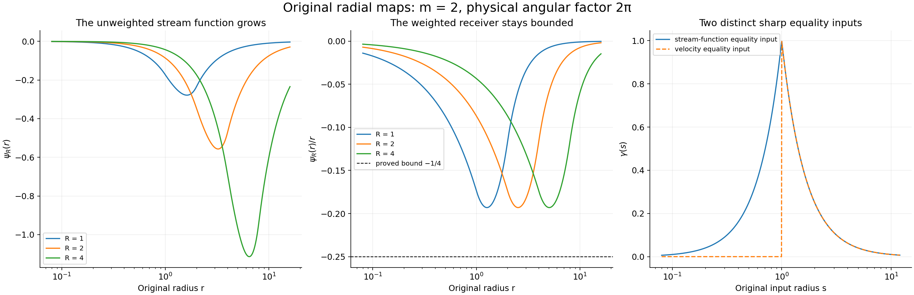
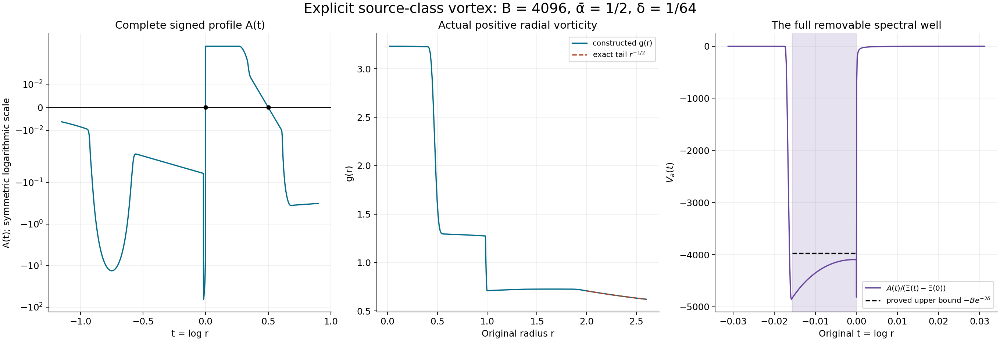

Radial vortices and the original spectral construction
The next route to nonuniqueness starts with an unstable Euler vortex and transfers its growth to a forced Navier–Stokes flow. Here we construct the original radial operations and the smooth background used in that route. We prove the exact eigenfunction map, an arbitrarily deep self-adjoint spectral well, an integer between its two thresholds, and quantitative cutoff estimates. The nonreal eigenvalue itself is the next step of the argument.
Lesson 28 completed the Buckmaster–Vicol vanishing-viscosity construction. The present route uses different solutions and its own complete proof. Lesson 1 supplies the original vorticity convention; all radial inverse and spectral operations needed in this chapter are proved below.
The human sources are Dallas Albritton, Elia Brué and Maria Colombo, Non-uniqueness of Leray solutions of the forced Navier–Stokes equations, arXiv:2112.03116v1, original main.tex 755–932; and Dallas Albritton, Elia Brué, Maria Colombo, Camillo De Lellis, Vikram Giri, Maximilian Janisch and Hyunju Kwon, Instability and nonuniqueness for the 2d Euler equations in vorticity form, after M. Vishik, arXiv:2112.04943v4, original general.tex 15–63 and linear-2.tex 184–294, 429–513, 1471–1556. Vishik's construction is credited through that seven-author original TeX treatment.
The source's unweighted stream-function estimate requires a radial weight. We give a counterexample and the complete replacement estimate, including its sharp constant. The original vortex has a slow tail and a circulation term; both remain in the eigenfunction map, pressure and cutoff. The final spectral test requires corrected inequalities and coefficients, which are identified in VA8. Five solved exercises give explicit equation tests, equality inputs, complete physical tails and the sign cost of compact velocity. This exposition has an author self-check; no independent review or novelty claim is asserted.
VG1. Retain the physical angular mode and its exact norm
Use the original polar coordinates \((x_1,x_2)=(r\cos\varphi,r\sin\varphi)\) on \(\mathbb R^2\). Fix the source integer \(m\geq2\), a nonzero integer \(k\), the signed angular index \(j=mk\), and \(n=|j|\geq2\). Let \(\mathcal H=L^2((0,\infty),r\,dr)\), with its actual unaveraged radial measure, and put
\[ \omega(r,\varphi)=g(r)e^{ij\varphi},\qquad \|\omega\|_{L^2(\mathbb R^2)}^2 =2\pi\int_0^\infty|g(r)|^2r\,dr. \tag{VG1} \]This linear map is a bijection onto the corresponding closed angular subspace. Its norm factor is exactly \(\sqrt{2\pi}\). For \(\psi=f(r)e^{ij\varphi}\), the original equation \(\Delta\psi=\omega\) is
\[ f''+\frac1r f'-\frac{j^2}{r^2}f=g. \tag{VG2} \]VG2. Construct the inverse with both radial boundary contributions
For every \(g\in\mathcal H\) and \(r>0\), define
\[ \begin{aligned} A(r)&=\int_0^r s^{n+1}g(s)\,ds,\qquad B(r)=\int_r^\infty s^{1-n}g(s)\,ds,\\ f(r)&=-\frac1{2n}\big[r^{-n}A(r)+r^nB(r)\big],\\ f'(r)&=\frac12\big[r^{-n-1}A(r)-r^{n-1}B(r)\big]. \end{aligned} \tag{VG3} \]Both integrals converge absolutely by Cauchy–Schwarz with measure \(s\,ds\): their squared kernel integrals are \(r^{2n+2}/(2n+2)\) and \(r^{2-2n}/(2n-2)\). They are locally absolutely continuous, with \(A'=r^{n+1}g\) and \(B'=-r^{1-n}g\) almost everywhere. Differentiation cancels the two local terms and gives the stated \(f'\). A second derivative inserted into all three terms of VG2 gives exactly \(g\), almost everywhere and distributionally on \((0,\infty)\). Neither endpoint contribution has been discarded.
At a fixed \(r\), the kernel of \(g\mapsto f(r)/r\), relative to \(s\,ds\), is
\[ -\frac1{2n}\left[ r^{-n-1}s^n\mathbf1_{s<r} +r^{n-1}s^{-n}\mathbf1_{s>r}\right]. \tag{VG4} \]Its two summands have disjoint supports. Its complete squared \(L^2(s\,ds)\) norm is
\[ \frac1{4n^2}\left[\frac1{2n+2}+\frac1{2n-2}\right] =\frac1{4n(n^2-1)}. \tag{VG5} \]Consequently
\[ \left\|\frac f r\right\|_\infty \leq c_n\|g\|_{\mathcal H},\qquad c_n=\frac1{2\sqrt{n(n^2-1)}}. \tag{VG6} \]This constant is sharp: at any fixed radius take \(g\) proportional to the conjugate kernel VG4. It belongs to \(\mathcal H\) and gives equality. Smooth compactly supported radial data approximate that kernel in \(\mathcal H\); the functional values converge, so the same constant is optimal also as a supremum over that class.
The solution is unique among distributional solutions of VG2 with \(\sup_{r>0}|f(r)|/r<\infty\). A difference solves the homogeneous equation. The exact substitution \(r=e^t\) gives \(F''-n^2F=0\), whose distributional solutions are \(a e^{nt}+b e^{-nt}\): factor the constant coefficient operator and solve its first-order factors by integrating factors. Thus the difference is \(a r^n+b r^{-n}\). Its quotient by \(r\) is bounded at both endpoints only when \(a=b=0\), since \(n>1\). VG3 therefore specifies the inverse, its domain and its range condition.
VG3. Recover the full physical velocity and its derivative norm
Keep the original convention \(\nabla^\perp=(-\partial_2,\partial_1)\). The physical velocity is
\[ u=\nabla^\perp\psi =e^{ij\varphi}\left[-\frac{ij}{r}f(r)e_r+f'(r)e_\varphi\right]. \tag{VG7} \]It is divergence free and has curl \(\omega\), by VG2. Write \(a_r=r^{-n-1}A(r)\), \(b_r=r^{n-1}B(r)\). Since \(j/n\) is exactly \(+1\) or \(-1\), its full norm is
\[ |u(r,\varphi)|^2 =\frac14\big(|a_r+b_r|^2+|a_r-b_r|^2\big) =\frac12\big(|a_r|^2+|b_r|^2\big). \tag{VG8} \]The two functionals have disjoint supports with squared norms \(1/(2n+2)\) and \(1/(2n-2)\). Apply Cauchy–Schwarz on each support and retain the larger coefficient to obtain
\[ \|u\|_\infty\leq\frac1{2\sqrt{n-1}}\|g\|_{\mathcal H} =\frac1{2\sqrt{2\pi(n-1)}}\|\omega\|_2. \tag{VG9} \]This bound is sharp for a fixed angular mode: choose \(g\) proportional to the second functional's conjugate kernel, supported on \(s>r\). The \(a_r\) term then vanishes and the \(b_r\) term attains its norm.
For smooth \(g\) compactly supported away from zero, \(\psi\) is a multiple of \(r^n e^{ij\varphi}\) near zero and of \(r^{-n}e^{ij\varphi}\) near infinity. It is smooth at the origin; twice integrating by parts has no boundary contribution at infinity. For each Cartesian pair, \(\int|\partial_{ab}\psi|^2 =\int\partial_{aa}\psi\,\overline{\partial_{bb}\psi}\). Summing all ordered pairs proves the full identity
\[ \|\nabla u\|_2^2=\|D^2\psi\|_2^2 =\|\Delta\psi\|_2^2 =2\pi\|g\|_{\mathcal H}^2=\|\omega\|_2^2. \tag{VG10} \]For a general input, approximate by the preceding smooth data. Cutting off the two radial tails and then convolving on compact intervals proves density, since the weight there is positive and bounded above and below. VG9 gives uniform velocity convergence; VG10 gives convergence of gradients in \(L^2\). Testing against compactly supported functions identifies the limit gradient with that of VG7. Thus VG10 and both original divergence and curl equations hold on all of \(\mathcal H\).
The angular mode also fixes the constant velocity. The Cartesian component frequencies are \(j-1,j+1\), both nonzero. Therefore the mean on every centered disk is zero. If two velocities have the same curl and divergence and gradients in \(L^2\), their gradient difference is harmonic in distributions. Its Fourier transform is an \(L^2\) function supported at zero, and hence vanishes. The velocity difference is constant; the disk means force that constant to be zero. VG7 is therefore the original Biot–Savart receiver on this subspace, with its constant mode specified.
VG4. An exact counterexample to the printed bound
Source main.tex 875 asserts a bound of \(\|f\|_\infty\) by \(\|g\|_{\mathcal H}\) with a constant depending on the angular index. The factor \(r^{-1}\) in VG6 is essential. Choose any nonzero nonnegative \(g\in C_c^\infty((1,2))\) and use the same original signed mode \(j\). For \(R>0\), set
\[ g_R(r)=R^{-1}g(r/R),\qquad f_R(r)=R f(r/R). \tag{VG11} \]Changing variables in both VG3 integrals proves that the displayed \(f_R\) is the exact inverse of \(g_R\). Moreover
\[ \|g_R\|_{\mathcal H}=\|g\|_{\mathcal H},\qquad \|f_R\|_\infty=R\|f\|_\infty\longrightarrow\infty,\qquad \|f_R/r\|_\infty=\|f/r\|_\infty. \tag{VG12} \]Both positive integrals in VG3 have the same negative coefficient, so the original \(f\) is nonzero. It is bounded because its endpoint powers are \(r^n,r^{-n}\). This smooth source-class family refutes the printed bound, retaining its angular index and radial measure. The following full calculation nevertheless proves the actual truncation conclusion using the correct receiver.
VG5. Retain every term of the original radial truncation
Let the original smooth radial background satisfy
\[ |\bar\omega(r)|+r|\bar\omega'(r)| \leq\frac C{1+r^2},\qquad \zeta(r)=\frac1{r^2}\int_0^r s\bar\omega(s)\,ds,\qquad \bar u=\zeta(r)x^\perp. \tag{VG13} \]Regularity at zero selects this exact integral and gives \(\zeta(0)=\bar\omega(0)/2\). Differentiation gives \(2\zeta+r\zeta'=\bar\omega\), so the curl is the original \(\bar\omega\). The complete bound is
\[ |\zeta(r)|\leq\frac{C\log(1+r^2)}{2r^2}\leq C/2. \tag{VG14} \]The last step uses \(\log(1+x)\leq x\). Also \(\log(1+x)/x\) decreases: its derivative has numerator \(x/(1+x)-\log(1+x)<0\), since the derivative of the negative numerator is \(x/(1+x)^2>0\) and it vanishes at zero.
Keep the source smooth radial cutoff \(\phi\), supported in the unit disk and equal to one on the disk of radius \(1/2\). Write its radial function \(\phi_0\), put \(\phi_R(r)=\phi_0(r/R)\), and keep the actual constants \(c_\Delta=\|\phi_0-1\|_\infty\), \(c_1=\|\phi_0'\|_\infty\), \(c_2=\|\phi_0''\|_\infty\). The first norm includes the exterior where \(\phi_0=0\); no special numerical cutoff values are assumed. Every term of the truncated velocity and curl is
\[ \begin{aligned} \bar u_R&=\phi_R\bar u,\\ \bar\omega_R&=\phi_R\bar\omega+r\zeta\phi_R',\\ \bar\omega_R'-\bar\omega' &=(\phi_R-1)\bar\omega' +\phi_R'(2\bar\omega-\zeta)+r\zeta\phi_R''. \end{aligned} \tag{VG15} \]Differentiate the second line and use \((r\zeta)'=\bar\omega-\zeta\) to prove the last. Both derivatives of the cutoff and the full tail are present. The velocity remains divergence free because the radial cutoff gradient is perpendicular to \(\bar u\).
For \(R\geq2\), VG13 gives \(\|\bar\omega'\mathbf1_{r\geq R/2}\|_{\mathcal H}\leq2C/R^2\). On \(R/2\leq r\leq R\), retain \(|\bar\omega|\leq4C/R^2\), \(|\zeta|\leq2C\log(1+R^2)/R^2\), and \(|r\zeta|\leq C\log(1+R^2)/R\). The square root of this annulus's radial measure is exactly \(R\sqrt{3/8}\). Consequently all terms of VG15 give
\[ \begin{aligned} \|\bar\omega_R'-\bar\omega'\|_{\mathcal H} &\leq\frac C{R^2}\left[ 2c_\Delta+\sqrt{3/8}\{8c_1+(2c_1+c_2)\log(1+R^2)\}\right],\\ \|\zeta(\phi_R-1)\|_\infty &\leq\frac{2c_\Delta C}{R^2}\log(1+R^2/4). \end{aligned} \tag{VG16} \]The second line uses the proved monotonicity over the entire exterior \(r\geq R/2\), rather than only the transition annulus.
VG6. Prove the bounded operators and the compact receiver
In the original signed mode the linearized operators are
\[ \begin{aligned} \mathcal A^{(k)}g&=-ij\zeta g+ij(f/r)\bar\omega',\\ \mathcal A_R^{(k)}g&=-ij\phi_R\zeta g+ij(f/r)\bar\omega_R',\\ (\mathcal A_R^{(k)}-\mathcal A^{(k)})g &=-ij(\phi_R-1)\zeta g +ij(f/r)(\bar\omega_R'-\bar\omega'). \end{aligned} \tag{VG17} \]The signs follow from the source \(-\mathcal A\omega=\bar u\cdot\nabla\omega +u\cdot\nabla\bar\omega\) and the negative radial component of VG7. Each formula acts on the entire \(\mathcal H\).
Indeed \(G=\|\bar\omega'\|_{\mathcal H}<\infty\). Smooth radial regularity gives \(\bar\omega'(0)=0\). With \(M_2=\sup_{[0,1]}|\bar\omega''|\), integration of \(M_2r\) on the inner interval and \(Cr^{-3}\) outside gives \(G^2\leq M_2^2/4+C^2/4\). Thus \(\|\mathcal A^{(k)}\|\leq n(C/2+c_nG)\). VG16 gives the corresponding boundedness for the truncation.
The nonlocal map \(g\mapsto ij(f/r)\bar\omega'\) is compact on this fixed mode. Its kernel is VG4 multiplied by \(ij\bar\omega'(r)\). Integrating its exact square with VG5 gives
\[ \|\mathcal K^{(k)}\|_{\rm HS}^2 =\frac{n}{4(n^2-1)} \int_0^\infty|\bar\omega'(r)|^2r\,dr. \tag{VG18} \]For completeness, approximate this square-integrable kernel by finite sums of products of one-variable simple functions. Truncate to finite-measure rectangles and use simple-function approximation there to prove this density. Each approximating kernel gives a finite-rank operator; Cauchy–Schwarz bounds the operator norm of its difference by the kernel's \(L^2\) norm. Hence the map is a norm limit of finite-rank operators and is compact. This proves compactness on the specified mode and does not infer it for an unexamined infinite angular sum.
Finally VG6, VG16 and the complete difference VG17 prove
\[ \begin{aligned} &\|\mathcal A_R^{(k)}-\mathcal A^{(k)}\|_{\mathcal H\to\mathcal H}\\ &\leq\frac{nC}{R^2}\Big[ 2c_\Delta\log(1+R^2/4)\\ &\qquad+c_n\big[2c_\Delta+\sqrt{3/8} \{8c_1+(2c_1+c_2)\log(1+R^2)\}\big]\Big] \longrightarrow0. \end{aligned} \tag{VG19} \]The exact physical norm factors \(\sqrt{2\pi}\) from VG1 cancel between input and output. This is therefore the operator norm on the original physical angular subspace. Both logarithms divided by \(R^2\) tend to zero, as follows from their elementary derivatives. This proves the source truncation estimate without the false unweighted stream-function bound.
VA1. Keep the two source notations and every spectral factor
In VG, the background was \(\bar\omega\), the perturbation was \(g\), and its stream function was \(f\). In this source the same roles are named \(g,\gamma,\psi\). Thus the exact dictionary is
\[ \bar\omega_{\rm VG}=g,\qquad g_{\rm VG}=\gamma,\qquad f_{\rm VG}=\psi,\qquad j=m>1,\qquad n=m. \tag{VA1} \]For integer \(m\geq2\), the physical angular mode is \(e^{im\theta}\). For real \(m>1\), only the radial operators are extended; no single-valued physical angular field is asserted. Every integral calculation VG2–VG6 remains valid for this real parameter. The original radial measure is still \(r\,dr\). Write
\[ \begin{aligned} \zeta(r)&=r^{-2}\int_0^r s g(s)\,ds,\qquad \bar V(x)=\zeta(|x|)x^\perp,\\ \mathcal A_m\gamma&=-im\zeta\gamma+im\,g'\psi/r,\\ \mathcal L_m&=i\mathcal A_m,\qquad \mathcal L_m\gamma=m\zeta\gamma-m\,g'\psi/r . \end{aligned} \tag{VA2} \]The signs follow from VG7 and the original linearized vorticity equation. Use three distinct spectral variables:
\[ \mathcal A_m\gamma=\lambda\gamma,\qquad \mathcal L_m\gamma=Z\gamma,\qquad Z=mz=i\lambda,\qquad \lambda=-imz,\qquad \operatorname{Re}\lambda=m\operatorname{Im}z. \tag{VA3} \]In particular, the source's change from \(Z\) to \(z\) does not remove the original angular multiplier \(m\).
For the backgrounds constructed below, retain the original \(0<\bar\alpha<1\) and the exact tail \(g(r)=r^{-\bar\alpha}\) for \(r\geq2\). Near zero \(g\) is a polynomial in \(r^2\). Consequently \(\zeta\) is bounded and \(g'\in L^2(r\,dr)\). VG6 proves boundedness of both operators in VA2. VG18 proves compactness of their nonlocal term, with the exact squared Hilbert–Schmidt norm
\[ \frac{m}{4(m^2-1)}\int_0^\infty|g'(r)|^2r\,dr. \tag{VA4} \]VA2. Prove the radial-to-logarithmic eigenfunction map
Keep \(Z=mz\), \(\operatorname{Im}z\ne0\). The original eigenvalue equation is equivalent to
\[ \begin{aligned} \gamma(r)&=\frac{g'(r)}{r(\zeta(r)-z)}\psi(r),\\ -\psi''-\frac1r\psi'+\frac{m^2}{r^2}\psi +\frac{g'}{r(\zeta-z)}\psi&=0. \end{aligned} \tag{VA5} \]Set \(t=\log r\), \(\varphi(t)=\psi(e^t)\). Direct differentiation, without dropping a coefficient, gives
\[ \begin{gathered} \psi'=r^{-1}\varphi',\qquad \psi''=r^{-2}(\varphi''-\varphi'),\qquad r\,g'(r)=A(t),\\ \Xi(t)=\zeta(e^t) =\int_{-\infty}^t e^{-2(t-s)}g(e^s)\,ds,\qquad A(t)=\frac{d}{dt}g(e^t),\\ -\varphi''+m^2\varphi+\frac{A}{\Xi-z}\varphi=0,\\ \int_0^\infty|\psi|^2\frac{dr}{r} =\int_{\mathbb R}|\varphi|^2dt . \end{gathered} \tag{VA6} \]The maps and their inverse are specified on the whole positive radial interval; the logarithmic map is exactly isometric for the displayed measures.
We prove both directions of the eigenfunction correspondence. Starting with \(\gamma\in\mathcal H\) in VA2, VG6 gives \(|\psi(r)|\leq c_m r\|\gamma\|_{\mathcal H}\). This proves square integrability in \(dr/r\) near zero. For the other endpoint put \(V_z=A/(\Xi-z)\). The tail of the actual background gives \(|V_z(t)|\leq \bar\alpha|\operatorname{Im}z|^{-1} e^{-\bar\alpha t}\) for \(t\geq\log2\).
Here is a complete decaying-solution construction at that endpoint. Choose \(T\) so that \(q=(2m)^{-1}\int_T^\infty|V_z(s)|ds<1/4\). On the Banach space of bounded continuous functions on \([T,\infty)\), solve by its convergent Neumann series
\[ h(t)=1+\frac1{2m}\int_t^\infty (1-e^{-2m(s-t)})V_z(s)h(s)\,ds . \tag{VA7} \]The integral operator has norm at most \(q\), so \(\|h-1\|_\infty\leq q/(1-q)<1/3\). Its tail bound gives \(h(t)=1+O(e^{-\bar\alpha t})\); differentiating the absolutely convergent integral gives
\[ h'(t)=-\int_t^\infty e^{-2m(s-t)}V_z(s)h(s)\,ds,\qquad h''-2mh'=V_zh . \tag{VA8} \]The derivatives are continuous, and \(h'=O(e^{-\bar\alpha t})\). Thus \(y_-(t)=e^{-mt}h(t)\) solves \(y_-''-m^2y_-=V_zy_-\), and never vanishes on this tail. Reduction of order supplies the second solution
\[ y_+(t)=y_-(t)\int_T^t y_-(s)^{-2}ds,\qquad W(y_-,y_+)=1,\qquad y_+(t)=\frac{e^{mt}}{2m}(1+o(1)). \tag{VA9} \]To check the last limit, use \(y_-^{-2}=e^{2ms}(1+O(e^{-\bar\alpha s}))\); since \(2m>\bar\alpha\), its integral is \(e^{2mt}(1+o(1))/(2m)\). Differentiating verifies the Wronskian and equation. Uniqueness for a continuous-coefficient second-order ODE, obtained by integrating the associated first-order system and applying Gronwall's inequality, shows that every solution is a fixed linear combination of this pair. The bound \(|\varphi(t)|\leq C e^t\) excludes its \(y_+\) coefficient because \(m>1\). Hence \(|\varphi(t)|\leq C e^{-mt}\) at infinity. This proves \(\varphi\in L^2(\mathbb R)\), without suppressing a resonant logarithm in a power bootstrap.
Conversely let a nonzero \(L^2\) solution of VA6 be given. The coefficient \(V_z\) is bounded, so its distributional second derivative belongs to \(L^2\). Fourier transformation then gives \(\varphi\in H^2(\mathbb R)\). In particular it has a bounded continuous representative: Cauchy–Schwarz applied to its Fourier inversion with weight \(1+\xi^2\) proves this assertion. Define \(\gamma\) by VA5. Then
\[ \|\gamma\|_{\mathcal H} \leq \frac{\|g'\|_\infty}{|\operatorname{Im}z|} \|\varphi\|_{L^2(dt)} . \tag{VA10} \]Let \(\psi_G\) be its VG3 inverse. VA5 gives \(\Delta_m(\psi-\psi_G)=0\), so \(\psi-\psi_G=a r^m+b r^{-m}\). The boundedness of \(\psi=\varphi(\log r)\) and \(|\psi_G|\leq Cr\) at both endpoints forces \(a=b=0\). If \(\gamma=0\), the same homogeneous equation and \(\psi\in L^2(dr/r)\) force \(\psi=0\), a contradiction. Thus this is a nonzero original eigenfunction, and the two constructions are inverse linear maps. The complete physical growth factor is VA3.
VA3. Define a completely explicit smooth family
We now construct the background rather than assuming it. Fix \(0<\bar\alpha<1\) and any real \(B\geq64\). Use the smooth functions
\[ \vartheta(s)= \begin{cases}e^{-1/s},&s>0,\\0,&s\leq0,\end{cases} \qquad H(s)=\frac{\vartheta(s)} {\vartheta(s)+\vartheta(1-s)} . \tag{VA11} \]The denominator is positive everywhere. Every one-sided derivative of \(\vartheta\) at zero is zero: each derivative for \(s>0\) is a polynomial in \(1/s\) times \(e^{-1/s}\), and this product tends to zero. It follows that \(H\) is smooth, equals zero for \(s\leq0\), equals one for \(s\geq1\), and lies strictly between them for \(0<s<1\). No particular derivative bound is needed.
Put \(\delta=B^{-1/2}\), \(\kappa=1/16\), and
\[ \begin{aligned} \chi_\delta(t)&=1-H\!\left(\frac{t+9\delta/8}{\delta/8}\right),\\ A_*(t)&=-\kappa e^{2t}\chi_\delta(t) +Bt(1-\chi_\delta(t))\quad(t\leq0),\\ b_*(t)&=\vartheta(t+1)\vartheta(-1/2-t),\\ Q&=\int_{\mathbb R}e^{2t}b_*(t)\,dt,\qquad b(t)=b_*(t)/Q,\\ J&=-\int_{-\infty}^0e^{2t}A_*(t)\,dt,\qquad A_B(t)=A_*(t)-(1-J)b(t)\quad(t\leq0). \end{aligned} \tag{VA12} \]The bump is positive precisely on \((-1,-1/2)\), so \(Q>0\). The tail and its support show
\[ 0<J\leq\frac{\kappa}{4} +B\int_{-9\delta/8}^0(-t)\,dt =\frac1{64}+\frac{81}{128} =\frac{83}{128}<1,\qquad \int_{-\infty}^0e^{2t}A_B(t)\,dt=-1. \tag{VA13} \]In this estimate the factor \(e^{2t}\leq1\) was used only as an explicit upper bound on the finite interval; it remains in the defining integral. Thus \(A_B<0\) for \(t<0\), \(A_B(t)=Bt\) on \([-\delta,0]\), and \(A_B(t)=-\kappa e^{2t}\) for \(t\leq-1\). The two supports are disjoint because \(\delta\leq1/8\).
For the nonnegative half-line keep
\[ \epsilon=\frac1{16eB},\qquad p_*=\frac1{8e},\qquad c_*=\frac1{4e},\qquad L=\log2,\qquad d=\frac{L-1/2}{2}>0 . \tag{VA14} \]Define, for \(t\geq0\),
\[ \begin{aligned} P(t)&=\big[1-H((t-\epsilon)/\epsilon)\big]Bt +H((t-\epsilon)/\epsilon)p_*,\\ R(t)&=\big[1-H(8(t-1/4))\big]P(t) +H(8(t-1/4))c_*(1/2-t),\\ w(t)&=H((t-1/2-d)/d),\\ A_B(t)&=(1-w(t))R(t)-w(t)\bar\alpha e^{-\bar\alpha t}. \end{aligned} \tag{VA15} \]For \(0\leq t\leq\epsilon\) this is \(Bt\), matching VA12 with all derivatives. On the first transition \(Bt\leq p_*\); after it, \(P=p_*\). The second transition occurs in \([1/4,3/8]\), where both its entries are positive and at most \(p_*\). Thereafter \(R=c_*(1/2-t)\). The final transition starts strictly after \(1/2\), where both its entries are negative, and ends at \(L\). It follows directly that the complete smooth \(A_B\) has
\[ \begin{gathered} A_B^{-1}(0)=\{0,1/2\},\qquad A_B'(0)=B,\qquad A_B'(1/2)=-c_*,\\ 0<A_B(t)\leq p_*\quad(0<t<1/2),\\ A_B(t)=-\bar\alpha e^{-\bar\alpha t}\quad(t\geq L). \end{gathered} \tag{VA16} \]These formulas establish all joins, signs, slopes and original tails. The narrow interval \(\epsilon\) retains the arbitrarily large slope \(B\) while respecting the uniform positive cap.
VA4. Recover the original vorticity and angular velocity
Set
\[ \begin{aligned} D_B(t)&=e^{-2t}\int_{-\infty}^t e^{2s}A_B(s)\,ds,\\ \Xi_B(t)&=-\int_t^\infty D_B(s)\,ds,\\ G_B(t)&=-\int_t^\infty A_B(s)\,ds,\qquad g_B(r)=G_B(\log r)\quad(r>0). \end{aligned} \tag{VA17} \]The tails in VA12 and VA16 make all these integrals converge. For \(t<0\) the weighted integral defining \(D_B\) is negative. On \([0,1/2]\) it is at most
\[ -1+p_*\int_0^{1/2}e^{2s}ds =-1+\frac{e-1}{16e}<-\frac{15}{16}. \tag{VA18} \]For \(t>1/2\) it decreases further. Hence \(D_B<0\) everywhere and \(\Xi_B>0\), with \(\Xi_B'=D_B\). Differentiating the first formula of VA17 and then using the zero limits at infinity proves the full identities
\[ \begin{gathered} D_B'+2D_B=A_B,\qquad \Xi_B''+2\Xi_B'=A_B,\qquad G_B=\Xi_B'+2\Xi_B,\\ \Xi_B(t)=\int_{-\infty}^t e^{-2(t-s)}G_B(s)\,ds,\\ \Xi_B(-\infty)=-\frac12\int_{\mathbb R}A_B(s)\,ds . \end{gathered} \tag{VA19} \]For the convolution formula multiply \(G_B=\Xi_B'+2\Xi_B\) by \(e^{2t}\) and integrate from \(-\infty\); the boundary term there is zero because \(\Xi_B\) is bounded. The last identity follows by Fubini; absolute integrability is supplied by the two exponential tails and the finite middle interval. In particular no free circulation term was removed.
Let \(c_0=\kappa/8=1/128\). For \(t\leq-1\), direct evaluation gives
\[ D_B(t)=-\frac{\kappa}{4}e^{2t},\qquad \Xi_B(t)=\Xi_B(-\infty)-c_0e^{2t},\qquad G_B(t)=2\Xi_B(-\infty)-4c_0e^{2t}. \tag{VA20} \]The corresponding \(g_B\) extends smoothly at \(r=0\), as does \(g_B(|x|)\) in Cartesian coordinates. For \(r\geq2\), VA16–VA17 give
\[ \begin{aligned} g_B(r)&=r^{-\bar\alpha},\\ \zeta_B(r)=\Xi_B(\log r) &=c_1r^{-2}+\frac1{2-\bar\alpha}r^{-\bar\alpha},\\ c_1&=\int_0^2 s\,g_B(s)\,ds -\frac{2^{2-\bar\alpha}}{2-\bar\alpha},\\ \zeta_B(r)&=r^{-2}\int_0^r s\,g_B(s)\,ds . \end{aligned} \tag{VA21} \]This retains the complete \(r^{-2}\) contribution and its actual coefficient, including either possible sign. The field \(\bar V_B=\zeta_B(r)x^\perp\) is smooth, divergence free, has curl \(g_B(r)\), and is a steady Euler vorticity field because its tangential velocity differentiates a radial vorticity to zero. The velocity equation also holds:
\[ (\bar V_B\cdot\nabla)\bar V_B=-r\zeta_B(r)^2e_r,\qquad p_B(r)=p_B(0)+\int_0^r s\zeta_B(s)^2ds . \tag{VA22} \]The pressure constant is arbitrary and retained; the derivative of this full pressure cancels the centripetal acceleration. The constructed vorticity is strictly positive everywhere. For \(t\geq1/2\), this follows from the negative remaining tail of \(A_B\). For \(0\leq t\leq1/2\), retain that tail and bound only the positive interval to obtain \(G_B(t)\geq2^{-\bar\alpha}-p_*/2 >1/2-1/(16e)>0\). For \(t<0\), the negative integral from \(t\) to zero makes \(G_B(t)>G_B(0)\). There is no asserted finite total kinetic energy for this uncut background. Its exact tail is the original one.
VA5. An arbitrarily deep spectral well with corrected constants
For \(a=0\), \(b=1/2\), define the real continuous potentials
\[ V_a(t)=\frac{A_B(t)}{\Xi_B(t)-\Xi_B(a)},\qquad V_b(t)=\frac{A_B(t)}{\Xi_B(t)-\Xi_B(b)} . \tag{VA23} \]At their respective apparent singularities use the limits \(A_B'(a)/D_B(a)\) and \(A_B'(b)/D_B(b)\). They are smooth there: divide numerator and denominator by \(t-a\) or \(t-b\) using their integral derivative formulas. They are bounded, and both tend to zero at both infinite endpoints, by VA20–VA21 and strict monotonicity of \(\Xi_B\).
On \([-\delta,0]\), the exact weighted moment in VA13 gives
\[ -1\leq\int_{-\infty}^t e^{2s}A_B(s)\,ds\leq-\frac12, \qquad -e^{2\delta}\leq D_B(t)\leq-\frac12 . \tag{VA24} \]Indeed the removed integral from \(t\) to zero lies in \([-B t^2/2,0]\). Integrating the derivative, with the orientation of the interval retained, gives for \(-\delta<t<0\)
\[ \frac{-t}{2}\leq\Xi_B(t)-\Xi_B(0) \leq e^{2\delta}(-t),\qquad -2B\leq V_a(t)\leq-B e^{-2\delta}\leq-\frac B2 . \tag{VA25} \]For the final inequality use \(2\delta\leq1/4\) and \(e^{1/4}\leq\sum_{k\geq0}(1/4)^k=4/3<2\). This proves the correct order of the positive denominator bounds.
Let \(\phi(t)=\sqrt2\cos(\pi t)\) on \([-1/2,1/2]\), zero elsewhere. It is in \(H^1(\mathbb R)\), with \(\|\phi\|_2=1\) and \(\|\phi'\|_2^2=\pi^2\). The potential \(V_a\) is negative on \((-\infty,1/2)\); at \(1/2\) it vanishes. Therefore its full Rayleigh quotient satisfies
\[ \begin{aligned} \int_{\mathbb R}(|\phi'|^2+V_a|\phi|^2)\,dt &\leq \pi^2-2B e^{-2\delta}\int_{-\delta}^0\cos^2(\pi t)\,dt\\ &=\pi^2-B e^{-2\delta} \left(\delta+\frac{\sin(2\pi\delta)}{2\pi}\right)\\ &\leq\pi^2-\frac{\sqrt B}{2}. \end{aligned} \tag{VA26} \]Here \(0<\delta\leq1/8\), so the sine is nonnegative and \(e^{-2\delta}>1/2\). Every factor from the squared test function is present. For any prescribed \(M\geq0\), the definite choice
\[ B_M=4(M^2+\pi^2+1)^2\geq64 \tag{VA27} \]makes this quotient at most \(-M^2-1\).
We also prove attainment, rather than treating a negative test value as an eigenfunction. For a bounded real \(V\) tending to zero at both ends, define \(E=\inf_{\|u\|_2=1,u\in H^1}\int(|u'|^2+V|u|^2)\). Suppose the displayed test above gives \(E<0\). A minimizing sequence is bounded in \(H^1\), since \(\|u'\|_2^2\leq Q(u)+\|V\|_\infty\). Take a weakly convergent subsequence with limit \(u\). On a bounded interval the estimate \(|u_n(t)-u_n(s)|\leq\|u_n'\|_2|t-s|^{1/2}\) and an \(L^2\) bound at one point give uniform boundedness and equicontinuity. Finite meshes followed by a diagonal subsequence prove uniform convergence on smaller compact intervals. Hence the potential integrals converge locally. Their tails are uniformly at most \(\sup_{|t|>R}|V(t)|\); thus they converge globally.
Weak lower semicontinuity gives \(Q(u)\leq E<0\), while the defining infimum gives \(Q(u)\geq E\|u\|_2^2\) and \(\|u\|_2\leq1\). Because \(E<0\), these inequalities force \(\|u\|_2=1\) and \(Q(u)=E\). Variations in \(H^1\) give \(-u''+Vu=Eu\). Boundedness of \(V\) gives \(u\in H^2\). Replacing \(u\) by \(|u|\) preserves its norm and does not increase its derivative energy, so a nonnegative minimizer exists. It is \(C^2\), and cannot vanish: at any zero its derivative would vanish, and ODE uniqueness would force it identically zero. Thus it is strictly positive.
The real operator \(-d^2/dt^2+V\) on \(H^2\subset L^2\) is self-adjoint: the Fourier multiplier \(\xi^2\) is self-adjoint, bounded real multiplication is symmetric, and the adjoint domain is still \(H^2\), since \(-u''+Vu\in L^2\) implies \(u''\in L^2\). For any real \(s<E\), its quadratic form has lower bound \((E-s)\|u\|_2^2\). Its range is closed by the corresponding norm bound and closedness of the operator; its orthogonal complement is the kernel of its adjoint, which is zero. Thus it is onto with bounded inverse. This proves that \(E\) is the bottom of its spectrum, not merely of the variational formula. Nonreal spectral points are excluded by the same range argument and the inequality \(\|(L-z)u\|_2\geq|\operatorname{Im}z|\|u\|_2\), obtained from the imaginary part of the inner product. The eigenvalue is simple: any two \(L^2\) eigenfunctions are \(H^2\), and both their values and first derivatives tend to zero at infinity. This follows from their uniform continuity and integrability; disjoint intervals around a nonvanishing sequence would contradict \(L^2\). Their constant Wronskian is therefore zero. Dividing by the strictly positive minimizer proves proportionality.
Applied to \(V_a\), these arguments construct the actual simple ground-state eigenvalue
\[ \inf\operatorname{spec}(-d^2/dt^2+V_a) =-\lambda_a\leq-M^2-1<-M^2 \tag{VA28} \]for the explicit smooth vortex with parameter \(B_M\).
VA6. Put an integer strictly between the two spectral thresholds
We supply the full comparison needed for the source's final choice of background. For any constructed profile, direct subtraction gives, away from the two removable points,
\[ V_a-V_b= \frac{A_B(t)(\Xi_B(a)-\Xi_B(b))} {(\Xi_B(t)-\Xi_B(a))(\Xi_B(t)-\Xi_B(b))}<0. \tag{VA29} \]For \(t<a\) both denominators are positive and \(A_B<0\); for \(a<t<b\) their product is negative and \(A_B>0\); for \(t>b\) both are negative and \(A_B<0\). At \(a\), \(V_a=A'_B(a)/D_B(a)<0=V_b\); at \(b\), \(V_a=0<V_b=A'_B(b)/D_B(b)\). Thus the strict comparison holds everywhere.
Write \(E_a=-\lambda_a\), \(E_b=-\lambda_b\) for the two variational infima. They are at most zero: translate a slowly dilated unit \(L^2\) bump far into a tail where the potential tends uniformly to zero, making both its derivative energy and potential integral arbitrarily small. If \(E_b<0\), its preceding positive ground state tested in \(V_a\), with VA29, gives \(E_a<E_b\). If \(E_b=0\) and \(E_a<0\), that conclusion already holds. Consequently
\[ \lambda_a>\lambda_b\geq0\quad\hbox{whenever }\lambda_a>0 . \tag{VA30} \]There is no unconditional claim of strict spectral-bottom inequality when both infima are zero.
Fix the explicit baseline \(\Xi_0\) obtained from VA27 with \(M=0\). Set
\[ M=3+\left\lceil\sqrt{\|(V_{a,0})_-\|_\infty}\right\rceil, \qquad \Xi_1=\Xi_{B_M},\qquad \Xi_\sigma=(1-\sigma)\Xi_0+\sigma\Xi_1 \quad(0\leq\sigma\leq1). \tag{VA31} \]Here \(v_-=\max\{-v,0\}\), and every quantity comes from the already explicit functions. The baseline eigenvalue obeys \(\lambda_a(0)\leq\|(V_{a,0})_-\|_\infty<M^2\), whereas VA28 gives \(\lambda_a(1)>M^2\). The profiles have the same two zeros of \(A\), the same negative far tail and the same original exponent. Convex combination preserves their strict sign patterns, strictly negative \(\Xi_\sigma'\), all endpoint formulas and the two nonzero slopes. In particular it stays in the source's class throughout.
For completeness the potential, rather than only \(\Xi\), is continuous in the norm required here. Near \(a\), use the exact factorization
\[ V_{a,\sigma}(t)= \frac{\int_0^1 A_\sigma'(a+s(t-a))\,ds} {\int_0^1 \Xi_\sigma'(a+s(t-a))\,ds}. \tag{VA32} \]On a fixed compact neighborhood, the denominator is uniformly negative for \(0\leq\sigma\leq1\), because it is a convex combination of two continuous strictly negative functions. The numerator and denominator depend affinely on \(\sigma\). The quotient rule therefore gives a uniform Lipschitz bound. The same argument applies near \(b\). On the remaining compact interval, the original denominators are uniformly separated from zero. In the two far tails, their limits are respectively \(\Xi_\sigma(-\infty)-\Xi_\sigma(a)>0\) and \(-\Xi_\sigma(a)<0\), bounded away from zero uniformly in \(\sigma\); the same is true with \(b\). The explicit common tails control all numerator differences. The quotient rule again gives a finite uniform bound there. Together these arguments prove
\[ \|V_{a,\sigma}-V_{a,\tau}\|_\infty\leq C_a|\sigma-\tau|, \qquad \|V_{b,\sigma}-V_{b,\tau}\|_\infty\leq C_b|\sigma-\tau| \tag{VA33} \]for definite finite constants, for example the suprema of the just-described quotient derivatives over their closed parameter and spatial domains. The variational formula now gives the same bounds for \(|\lambda_a(\sigma)-\lambda_a(\tau)|\) and \(|\lambda_b(\sigma)-\lambda_b(\tau)|\).
Let \(\sigma_0\) be the largest solution of \(\lambda_a(\sigma)=M^2\). It exists by continuity, its level set is compact, and \(0<\sigma_0<1\). After its last crossing, \(\lambda_a(\sigma)>M^2\): any contrary value together with the endpoint at one would give a later crossing. VA30 gives \(d_0=M^2-\lambda_b(\sigma_0)>0\). Choose
\[ h=\min\left\{\frac{1-\sigma_0}{2}, \frac{d_0}{2(1+C_b)}\right\}>0,\qquad \Xi=\Xi_{\sigma_0+h}. \tag{VA34} \]VA33 yields \(\lambda_b(\sigma_0+h)<M^2<\lambda_a(\sigma_0+h)\). Since \(M\geq3\), the constructed original smooth vortex satisfies
\[ \sqrt{\max\{1,\lambda_b\}}<M<\sqrt{\lambda_a}, \qquad M\in\mathbb N,\quad M\geq3 . \tag{VA35} \]This constructs the required integer spectral window. To obtain an exponentially growing Euler mode in that window one must still prove the nonreal Rayleigh eigenvalue by the source's neutral-mode and bifurcation argument; VA35 alone does not assert that additional conclusion.
VA7. Truncate the actual slow tail without changing it in advance
The source background just constructed has \(g(r)=r^{-\bar\alpha}\), not the faster decay used in VG13. We therefore prove the required comparison for this actual background. Keep the original cutoff and all its derivative constants \(c_\Delta,c_1^{\rm cut},c_2^{\rm cut}\). For \(R\geq4\) define \(\bar V_R=\phi_R\bar V\) and its exact vorticity \(g_R=\phi_Rg+r\zeta\phi_R'\). To avoid confusing the circulation coefficient in VA21 with the cutoff derivative, write it as \(c_1^{\rm circ}=c_1\) here. Put
\[ \begin{aligned} Z_R&=4|c_1^{\rm circ}|R^{-2} +\frac{2^{\bar\alpha}}{2-\bar\alpha}R^{-\bar\alpha},\\ D_R&=c_\Delta\sqrt{\bar\alpha/2}\, 2^{\bar\alpha}R^{-\bar\alpha}\\ &\quad+\sqrt{3/8}\left[ 2^{\bar\alpha+1}c_1^{\rm cut}R^{-\bar\alpha} +(c_1^{\rm cut}+c_2^{\rm cut})Z_R\right]. \end{aligned} \tag{VA36} \]The complete derivative remains
\[ g_R'-g'=(\phi_R-1)g' +\phi_R'(2g-\zeta)+r\zeta\phi_R'' . \tag{VA37} \]For \(r\geq R/2\geq2\), VA21 gives \(|\zeta|\leq Z_R\); on the cutoff annulus \(|g|\leq2^{\bar\alpha}R^{-\bar\alpha}\). Moreover
\[ \left(\int_{R/2}^\infty \bar\alpha^2r^{-2\bar\alpha-2}r\,dr\right)^{1/2} =\sqrt{\bar\alpha/2}\,2^{\bar\alpha}R^{-\bar\alpha}, \qquad \left(\int_{R/2}^Rr\,dr\right)^{1/2}=\sqrt{3/8}\,R . \tag{VA38} \]Apply these to all three terms of VA37, using \(|\phi_R'|\leq c_1^{\rm cut}/R\), \(|\phi_R''|\leq c_2^{\rm cut}/R^2\), and \(r\leq R\) on their supports. They give
\[ \begin{gathered} \|g_R'-g'\|_{\mathcal H}\leq D_R,\qquad \|(\phi_R-1)\zeta\|_\infty\leq c_\Delta Z_R,\\ \|\mathcal A_{m,R}-\mathcal A_m\| \leq m(c_\Delta Z_R+c_mD_R)\longrightarrow0 . \end{gathered} \tag{VA39} \]The last inequality is the exact operator difference VA2 received by VG6. It holds for the physical \(L^2\) mode as well, because its input and output have the same \(\sqrt{2\pi}\) norm factor. The slow original tail, circulation term and every cutoff derivative have all been retained.
VA8. Exact source corrections and the next calculation
In linear-2.tex 1478 the identity needed is \(A=\Xi''+2\Xi'\), as correctly stated at line 250; the exponential in \(\Xi'\) is \(e^{2t}\). Line 1505's maximum statement must be confined to \(t\geq0\): the weighted integral approaches zero at \(-\infty\). VA18 proves negativity on the middle interval, and the negative tails prove it elsewhere.
The denominator inequalities at line 1542 are reversed for negative \(t\); VA25 supplies the ordered bounds. The test function has derivative energy \(\pi^2\). Using \(2\pi^2\) as an upper bound is harmless, but the factor in line 1550 does not follow from its preceding \(-B/2\) estimate. VA26–VA28 supply a complete replacement estimate and preserve the intended arbitrarily deep well. No failure of that intended conclusion is inferred.
Lines 448–450 require the strict-comparison qualification proved in VA30. For the interpolation at line 512, uniform convergence of \(\Xi\) alone is not the stated norm control on its quotient potential. VA32–VA33 prove that control for the actual chosen path, including the removable points.
These corrections have been propagated into the explicit vortex, the two ground-state comparisons and the original slow-tail cutoff estimate. The next concrete calculation is to derive the boundary values of \(A/(\Xi-z)\) as \(\operatorname{Im}z\downarrow0\), prove the neutral-mode classification, and construct the nonreal root near the simple ground state. Its exact receiving growth rate must remain \(\lambda=-imz\). None of those later conclusions is replaced by a hypothesis in the present proof.
Two pictures of the proved original maps

VG1–VG12 and Exercises 1–2 prove these formulas with the original mode \(m=2\). The first two panels use the exact annular input \(\mathbf1_{[1,2]}\) and \(R=1,2,4\). Its physical squared norm is \(3\pi\). The horizontal radius is logarithmic. The last panel shows the two distinct sharp equality inputs from EX4. These are formula plots, not simulated Euler solutions.

VA11–VA28 specify every function shown here. The example uses \(B=4096,\bar\alpha=1/2,\delta=1/64\). The first panel samples the complete signed \(A(t)\), with a symmetric logarithmic vertical scale; its two zeros are \(0,1/2\). The second samples the original vorticity in the original radius. The third samples the entire quotient potential around its removable point at \(t=0\). The shaded interval is \([-\delta,0]\), and the dashed line is the proved upper bound \(-B e^{-2\delta}\). Numerical quadrature evaluates the displayed integrals; the proofs and spectral bounds are VA17–VA28. No computed unstable eigenvalue is represented.
The complete reproducible figure source retains both examples and all parameters. Human comparison: Albritton–Brué–Colombo, original radial truncation; and the seven-author treatment of Vishik, original class construction and spectral test.
Five solved exercises
Exercise 1. Compute an annular source and retain both boundary terms
Take the original mode \(m=2\) and \(\gamma(r)=\mathbf1_{[1,2]}(r)\). Find its full radial stream function, physical norm and the effect of \(\gamma_R(r)=R^{-1}\gamma(r/R)\).
Solution. Substituting this particular input into the two actual integrals VG3 gives
\[ \psi(r)= \begin{cases} -\dfrac{r^2\log2}{4},&0<r\leq1,\\[3pt] -\dfrac14\left[\dfrac{r^2-r^{-2}}4 +r^2\log(2/r)\right],&1\leq r\leq2,\\[3pt] -\dfrac{15}{16r^2},&r\geq2 . \end{cases} \tag{EX1} \]The middle logarithm comes from the upper endpoint integral \(\int_r^2s^{-1}ds\); it cannot be removed. The inner and outer formulas agree with the middle one in both value and first derivative at \(1\) and \(2\). Hence there is no point-mass term in \(\psi''+r^{-1}\psi'-4r^{-2}\psi\). Differentiating each open interval gives exactly the stated indicator input. Its unaveraged norms are
\[ \|\gamma\|_{\mathcal H}^2=\frac32,\qquad \|\gamma e^{2i\theta}\|_{L^2(\mathbb R^2)}^2=3\pi,\qquad \|\nabla u\|_{L^2(\mathbb R^2)}^2=3\pi . \tag{EX2} \]The last equality is VG10 for this \(L^2\) input.
Changing variables in each integral, including its endpoint, gives \(\psi_R(r)=R\psi(r/R)\). In particular
\[ \|\gamma_R\|_{\mathcal H}^2=\frac32,\qquad |\psi_R(R)|=\frac{R\log2}{4},\qquad \|\psi_R/r\|_\infty=\|\psi/r\|_\infty\leq\frac14 . \tag{EX3} \]This is a fully explicit annular counterexample to the unweighted bound. VG4 supplies the additional smooth-input version, so the failure is not caused by the indicator's jumps.
Exercise 2. Find inputs attaining the two different sharp constants
At radius \(r=1\), find equality inputs for the weighted stream-function bound and the full velocity bound in a fixed positive angular mode \(m>1\). Compute all radial norms. Use integer \(m\geq2\) for the physical velocity statement.
Solution. Define
\[ \gamma_{\rm str}(s)= s^m\mathbf1_{s<1}+s^{-m}\mathbf1_{s>1},\qquad \gamma_{\rm vel}(s)=s^{-m}\mathbf1_{s>1}. \tag{EX4} \]These belong to \(\mathcal H\), and direct integration gives
\[ \begin{aligned} \|\gamma_{\rm str}\|_{\mathcal H}^2 &=\frac1{2m+2}+\frac1{2m-2} =\frac{m}{m^2-1},\\ \psi_{\rm str}(1)&=-\frac1{2(m^2-1)},\\ \frac{|\psi_{\rm str}(1)|} {\|\gamma_{\rm str}\|_{\mathcal H}} &=\frac1{2\sqrt{m(m^2-1)}}=c_m . \end{aligned} \tag{EX5} \]All signs agree with the negative Green kernel; equality does not require changing the original vorticity convention.
For the second input the lower endpoint integral vanishes at radius one, and the upper integral is \(1/(2m-2)\). Therefore VG7 gives
\[ \begin{aligned} \|\gamma_{\rm vel}\|_{\mathcal H}^2&=\frac1{2m-2},\\ \psi_{\rm vel}(1)&=-\frac1{4m(m-1)},\qquad \psi_{\rm vel}'(1)=-\frac1{4(m-1)},\\ |u_{\rm vel}(1,\theta)|^2&=\frac1{8(m-1)^2},\qquad \frac{|u_{\rm vel}(1,\theta)|} {\|\gamma_{\rm vel}\|_{\mathcal H}} =\frac1{2\sqrt{m-1}} . \end{aligned} \tag{EX6} \]The physical-input norm introduces exactly \(\sqrt{2\pi}\) as in VG9. Thus the two sharp maps are attained by different data. Keeping the full radial and tangential velocity components is necessary to obtain the second constant.
Exercise 3. Recover the entire pressure and kinetic-energy tails
For the actual constructed vortex, compute the pressure near zero and on \(r\geq2\), and compute its physical kinetic-energy integral on \(2\leq|x|\leq R\). Retain the circulation coefficient \(c_1\), its sign and its mixed terms.
Solution. Put \(X=\Xi_B(-\infty)\) and \(c_0=1/128\). Near zero VA20 gives \(\zeta=X-c_0r^2\). Integrating the exact centripetal balance VA22 yields
\[ p_B(r)=p_B(0)+\frac{X^2r^2}{2} -\frac{Xc_0r^4}{2}+\frac{c_0^2r^6}{6}. \tag{EX7} \]All three terms come from the original squared velocity.
On the outer region put \(c_2=(2-\bar\alpha)^{-1}\). This is a displayed coefficient, not an absorbed factor. Using \(\zeta=c_1r^{-2}+c_2r^{-\bar\alpha}\), one obtains
\[ \begin{aligned} p_B(r)-p_B(2) &=\frac{c_1^2}{2}(2^{-2}-r^{-2})\\ &\quad+\frac{2c_1c_2}{\bar\alpha} (2^{-\bar\alpha}-r^{-\bar\alpha})\\ &\quad+\frac{c_2^2}{2-2\bar\alpha} (r^{2-2\bar\alpha}-2^{2-2\bar\alpha}). \end{aligned} \tag{EX8} \]Differentiating produces \(r\zeta(r)^2\), including the mixed term of either sign. The range \(0<\bar\alpha<1\) keeps both denominators nonzero; no endpoint formula has been silently included.
The physical measure is \(2\pi r\,dr\), and \(|\bar V_B|^2=r^2\zeta^2\). Consequently
\[ \begin{aligned} \int_{2\leq|x|\leq R}|\bar V_B(x)|^2dx =2\pi\Big[& c_1^2\log(R/2)\\ &+\frac{2c_1c_2}{2-\bar\alpha} (R^{2-\bar\alpha}-2^{2-\bar\alpha})\\ &+\frac{c_2^2}{4-2\bar\alpha} (R^{4-2\bar\alpha}-2^{4-2\bar\alpha})\Big]. \end{aligned} \tag{EX9} \]The largest power has a strictly positive coefficient and dominates both lower powers. Thus the original background has infinite total kinetic energy. The later compact velocity cutoff is a substantive map whose curl must be computed; one cannot simply regard this original vortex as an energy-class velocity.
Exercise 4. Check a definite deep well and its exact test energy
Take \(B=4096\) in VA12–VA17. Give numerical-free bounds on the spectral bottom, and identify exactly which conclusion about angular modes follows.
Solution. Here
\[ \begin{gathered} \delta=\frac1{64},\qquad \epsilon=\frac1{65536e},\qquad A'_B(0)=4096,\\ -e^{1/32}\leq D_B(t)\leq-\frac12 \quad(-1/64\leq t\leq0). \end{gathered} \tag{EX10} \]The unit-norm test function has the exact derivative energy
\[ 2\pi^2\int_{-1/2}^{1/2}\sin^2(\pi t)\,dt=\pi^2. \tag{EX11} \]Its potential term gives the sharper explicit upper bound
\[ -\lambda_a\leq \pi^2-4096e^{-1/32} \left(\frac1{64}+\frac{\sin(\pi/32)}{2\pi}\right) \leq\pi^2-32<-16. \tag{EX12} \]The last strict inequality follows already from \(\pi<4\). In particular \(\sqrt{\lambda_a}>4\). This single test does not locate \(\lambda_b\) and does not produce a nonreal Rayleigh root. VA31–VA35 give the separate complete construction that places an integer between the two thresholds. The subsequent nonreal-root calculation is still required to obtain growth of the original Euler evolution.
Exercise 5. Prove the circulation and sign cost of compact velocity
For the explicit positive vorticity \(g_B\), truncate its velocity with the original radial \(\phi_R\), \(R\geq4\). Compute the full radial vorticity integral, and prove that the compact vorticity takes a negative value in the cutoff annulus even though the original vorticity is positive.
Solution. Its vorticity is \(g_R=\phi_Rg_B+r\zeta_B\phi_R'\). The original identity \(g_B=2\zeta_B+r\zeta_B'\) gives
\[ r g_R(r)=\frac{d}{dr}\big(r^2\phi_R(r)\zeta_B(r)\big), \qquad \int_0^\infty r g_R(r)\,dr=0 . \tag{EX13} \]The endpoint at infinity vanishes by compact support, while the endpoint at zero vanishes because \(\zeta_B\) is bounded. Hence the physical total vorticity is exactly zero as well.
On \(r\leq R/2\), the cutoff is one, and therefore
\[ \begin{aligned} \int_{R/2}^R r g_R(r)\,dr &=-\int_0^{R/2}r g_B(r)\,dr\\ &=-(R/2)^2\zeta_B(R/2)\\ &=-c_1-\frac{(R/2)^{2-\bar\alpha}}{2-\bar\alpha}<0 . \end{aligned} \tag{EX14} \]Its strict sign follows from the positive integrand in the first line, not from an assumed sign of \(c_1\). Continuity then forces a negative value in \((R/2,R)\). This conclusion needs no monotonicity or nonnegativity assumption on the cutoff.
By contrast, simply cutting off the original positive vorticity with a nonnegative cutoff gives a strictly positive total radial integral \(C\). Its original radial velocity outside the support is \(C r^{-1}e_\theta\). Its exterior kinetic energy is \(2\pi C^2\int_R^\infty r^{-1}dr=\infty\). The derivative term in the velocity cutoff changes exactly this circulation and energy behavior. VA37–VA39 retain its full derivative cost in the operator comparison.
Continue to the nonreal Rayleigh eigenvalue
The radial inverse, physical velocity, sharp bounds and complete cutoff maps are now proved. The source's smooth vortex has been constructed with every join and integral constraint, and its two self-adjoint thresholds enclose an integer angular mode.
The next calculation takes boundary values of the full Rayleigh coefficient at the real axis, classifies neutral modes and constructs the nonreal eigenvalue by bifurcation and continuation. The original Euler growth rate remains \(\lambda=-imz\). After that come the three-dimensional ring, viscous spectral comparison and nonlinear Leray solution. These lead onward to the assigned model constructions, the Alpöge–Buckmaster programme, OpenAI and workbench lessons.